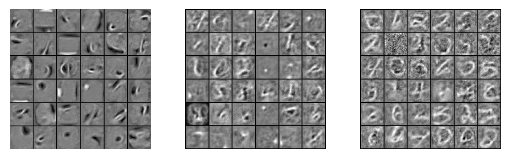
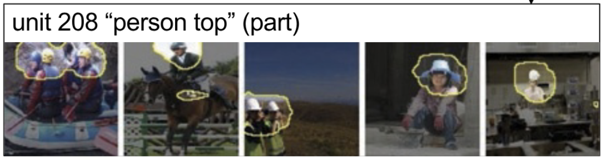
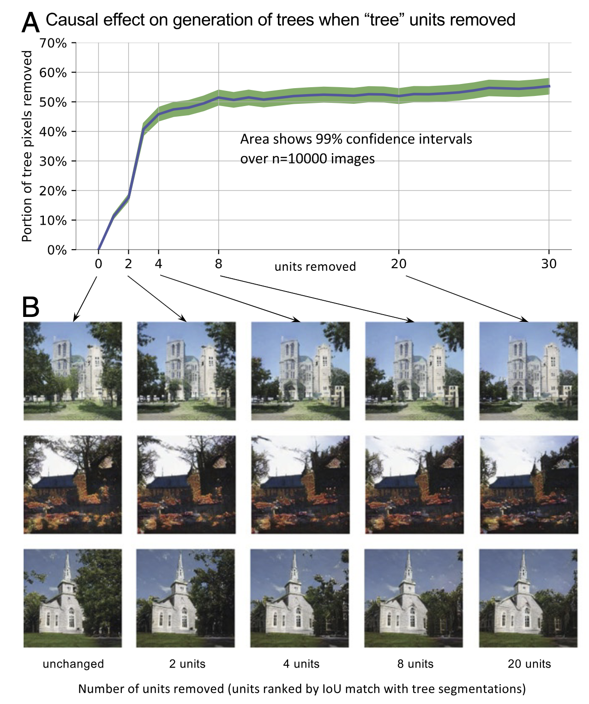
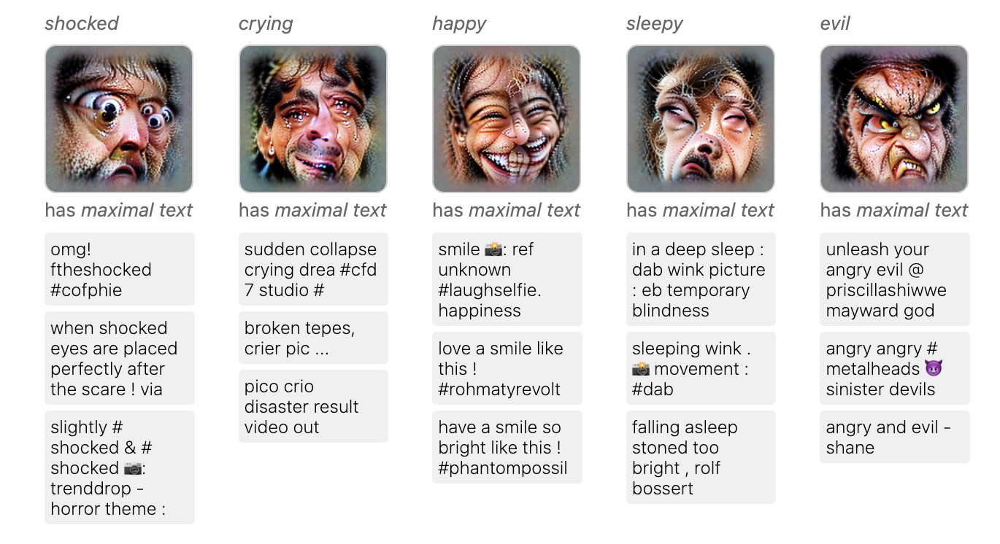
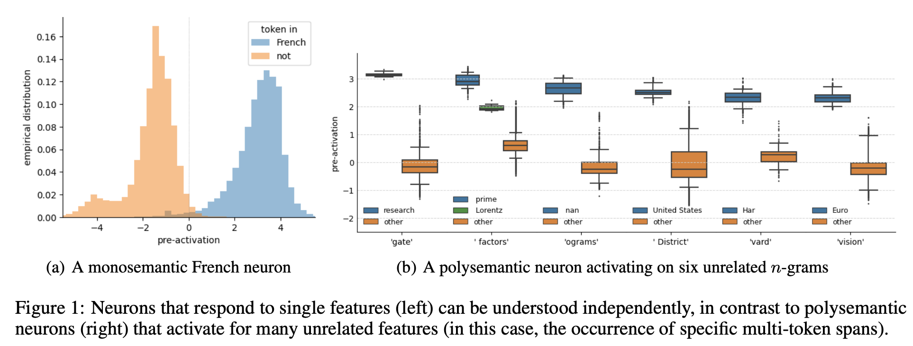

{header('Neuron Interpretation')}

<!--
<p>
An ideal explanation for a network's decision would deal with
higher-level variables than raw inputs such as pixels. Rather than explaining
a "dog image" by pointing out any individual pixel or even a set of pixels,
an ideal explanation might point "there are four legs here", "there is a dark
nose here"; "there is a floppy ear there"; "there is some curly fur there."
-->

<div><h5>September 12, 2024 • <em>Sheridan Feucht, David Bau</em></h5>

<p>
By definition, deep neural networks consist of layers upon layers of activations, 
where the inputs to each layer are the outputs of the previous layer. 
As any given neuron will have different numerical values for different model inputs, 
it stands to reason that the individual neurons at each layer might represent 
"meaningful" input variables for subsequent layers of the network. 
Analyzing these values constitutes a second early line of work
in interpretability, <em>neuron interpretation</em>. Let's look at some of the ways people have 
approached this problem. 

<h3>What Exactly is a Neuron?</h3>
For feed-forward networks, a "neuron" is just a single unit in a network that takes in inputs 
from multiple other units and outputs a scalar value (kind of like a biological neuron). 
Let's say we have a 3x3 matrix of weights \( W^{\ell} \) in a toy deep network, as well as 
activations from the previous layer \( a^{\ell-1} \): 

\[
W^{\ell} = 
\begin{bmatrix}
0.34 & -0.02 & 1.01\\
-1.22 & -0.03 & 3.05\\
-3.33 & -4.50 & -0.92\\
\end{bmatrix}
\hspace{0.5cm}
a^{\ell-1} = \begin{bmatrix}
0.2 \\
0.4 \\
0.6 \\ 
\end{bmatrix}
\]

Normally, we calculate all of the neurons at once and apply an activation function like
ReLU to get the next set of activations \( a_{\ell}\). 
<!-- array([ 0.666,  1.574, -3.018]) -->
<!-- tensor([0.6660, 1.5740, 0.0000], dtype=torch.float64) -->

\[
\text{ReLU}(W^{\ell}a^{\ell-1}) = 
\begin{bmatrix}
0.67 \\
1.57 \\
0.00 \\ 
\end{bmatrix}
\]

But we can also focus on a single neuron, which would simply correspond to a row 
in the weight matrix \( W^{\ell} \). 
For example, the first neuron of \( W^{\ell} \) looks like the below equation. 
It weights all of the values of \( a^{\ell-1} \), the neuron activations from the previous layer, 
and applies an activation function to ultimately output its own activation.
\[ \text{ReLU}[(0.34 * 0.2) + (-0.02 * 0.4) + (1.01 * 0.6)] = 0.666   \]

For convolutional networks, the term "neuron" is a little different. The general 
idea remains the same: a "neuron" is a unit that takes in all of the values from the previous layer
and outputs a value of its own. However, this entry corresponds a particular <i>filter</i> in the convolutional model, 
whose output is a feature map across the input image, not a scalar. 
Instead of computing a weighted sum of the previous neuron activations, a filter
convolves over all of the previous neuron activations (with a different learned kernel for each channel) 
and sums those maps to produce its output. 
There is a little bit of disagreement with this terminology, however—
some researchers use the term "channel" to describe these feature 
maps and describe specific (x,y) positions within the maps as "neurons." 
But the papers we are reading today mostly use the former definition. 
<br><br>

<h2>Maximal-Response Visualizations of Neurons</h2>

<p>
One of the most common ways to understand the role of a neuron
is to ask the question: "what input causes this neuron to fire most strongly?"

<p>
In <a href="https://papers.baulab.info/papers/also/Erhan-2009.pdf">2009,
Dumitru Erhan</a> wrote <em>Visualizing Higher-Layer Features of a Deep Network</em>,
where he proposed analyzing the components of a neural network by identifying the
inputs that caused them to maximize their output. That is, writing
\( h_{ij}( \theta, x) \) as the value of the neuron \( h_{ij} \) within a network
with parameters \( \theta \) in response to the input \( x \), he proposed understanding
the neuron by identifying and visualizing the maximizing input

\[ x^* = \arg\max_{x \text{ s.t. } ||x|| = \rho} h_{ij}(\theta, x) \]

<p>
Erhan proposed maximizing input \( x^* \) through
gradient descent. By starting with a random or arbitrary \( x \),
optimizing towards \( x^* \) could reveal an image that the
neuron is looking for, a picture of the "concept" for \( h_{ij} \). When this 
optimization was done on a network trained to complete MNIST, they found that 
individual neurons at early layers (left) seemed to select for lines and curves in 
particular positions, whereas late-layer neurons were activated by entire digits. 




<p>
Several modifications to the optimization algorithm were proposed by a series
of papers; an excellent feature visualization method that incorporates
many of the techniques was developed by <a href="https://distill.pub/2017/feature-visualization/"
>Chris Olah (2017)</a>, and was used to visualize all the units of several
networks at the <a href="https://microscope.openai.com/models">OpenAI Microscope</a>
website.

<h2>Network Dissection</h2>

Instead of optimizing for inputs that activate a neuron strongly, we can also 
analyze features of images that highly activate a given neuron. 
<a href="https://www.pnas.org/doi/full/10.1073/pnas.1907375117">This paper</a> 
from David's PhD work looks at neurons in two types of vision models: 
a CNN trained on scene classification and a GAN trained to generate scenes. 

<h3>Neurons in a CNN Scene Classifier</h3>
First, the authors look at neurons within a VGG-16 scene classifier. They are able 
to visualize which parts of an image are relevant to a particular filter by looking 
at areas of the image for which the filter activates strongly (beyond its top 1% quantile level). 
To interpret this information, they use a separate image segmentation model to 
predict the presence of a concept \( c \) at any given position. These human-interpretable 
concepts are matched to specific neurons by calculating the IoU between the segmentation 
model and the sections of image that highly activate the filter. 



Using this method, they are able to describe neurons in later convolutional layers 
as "object detectors" that consistently fire on things like planes, heads, and fur. 
The more interpretable these features are, the more important they are shown to be 
for downstream scene classification. They show some interesting experiments in their 
Figure 2 that illustrate what happens when you zero-ablate specific units. For example, 
removing a single unit that corresponds to "snow" decreases accuracy for the class "ski resort" 
by 9-10%. 
<br><br>


<h3>Neurons in a Generative Network</h3>

The authors then analyze a Progressive GAN in a similar way, by looking at the 
regions of the generated image that filters are most active for (beyond their top 1% quantile level). 
While the VGG-16 scene classifier had lots of "object detector" neurons, this GAN 
has a higher proportion of "parts" neurons (like tops of chairs, bottoms of windows, etc), 
which are concentrated near the beginning of the network. 
In a Progressive GAN trained on church scenes, some of these neurons seemed to correspond to trees. 
By zero-ablating twenty of these units, they were able to remove more than half of the generated 
tree pixels from the GAN's output image. 



Additionally, they find that <em>activating</em> units in specific locations within an image 
causes the model to draw, for example, extra doors. Interestingly, drawing in doors only works 
in contexts that are semantically reasonable (i.e. activating "door" neurons in the sky does not 
cause a door to be drawn in the sky). 
<br><br>

<h2>Multimodal Neurons</h2>
<p>

The inspiration for the next paper, <a href="https://distill.pub/2021/multimodal-neurons/">Multimodal Neurons in Artificial Neural Networks</a>
comes from a <a href="https://amygdala.psychdept.arizona.edu/IntroData/Readings/week5/Quiroga-reddy-kreiman-koch-Fried+invariant-visual-single-neurons-human+Nature+2005.pdf">2005 neuroscience paper by Quiroga et al.</a>
In the original neuroscience paper, the authors claim to have found specific neurons in the medial temporal lobe that selectively 
fire in response to certain individuals, invariant to the visual features of those stimuli. For example, one neuron 
they studied in the hippocampus would fire in response to pictures of Halle Berry as Catwoman, drawings of her, 
and the literal text "Halle Berry," but not fire in response to other famous actors. 

<p>
In this paper, Goh et al. claim to have found the equivalent phenomenon in CLIP neurons. 
Instead of Halle Berry or Jennifer Aniston, their canonical example is a 
<a href="https://microscope.openai.com/models/contrastive_4x/image_block_4_5_Add_6_0/550">Spider-Man neuron</a>
in the final layer of CLIP ResNet-50 4x. To show this, they use two approaches similar to what we've discussed so far: 
<b>feature visualization</b> across an entire channel and for a particular position in the image (left), and
collecting <b>dataset examples</b> that cause the neuron to fire. 


<p>
There are a lot of interesting neuron examples in this paper, along with experiments that 
find language embeddings to match specific "emotion neurons," but the exact reasons for the 
emergence of these multimodal representations is left implied.



<p>
<i>Sheridan's opinion:</i> It's worth emphasizing that this paper focuses on CLIP models, 
which are pretrained with the objective of aligning images 
to their textual captions. CLIP models <em>have</em> to map images to high-level semantic 
features in order to succeed on their training objective. It's definitely surprising that 
some of these features seem to be localized to one neuron, but I personally find it 
a little bit weird to frame these results as analogous to "Halle Berry" neurons in the brain,
which themselves are somewhat contentious. 
One of the original authors of that paper, Gabriel Kreiman, 
now doubts the veracity of this line of work (<a href="https://klab.tch.harvard.edu/publications/PDFs/gk7786.pdf">Kreiman, 2019</a>; see Fig. 1).

<br><br> 

<h2>Neurons in a Haystack</h2>
<p>
It's not just vision models that have interpretable neurons—in Finding Neurons in a Haystack, 
Wes Gurnee and coauthors use sparse probing to identify interpretable neurons 
in large language models. This paper has a lot of interesting results, including some foreshadowing 
of upcoming topics, but we can focus on the findings that are relevant to our 
discussion of neuron interpretation. 

<h3>Approach: Sparse Probing</h3>
<p>
The tool that Gurnee et al. use to search through LLM neurons is <em>sparse probing.</em>
Probing, which we'll cover in a few days, is the strategy of interpreting network activations 
by training smaller models on top of those activations. The idea is that if a model represents 
a feature like \( \texttt{is_german} \), a probe trained on that model's activations should have 
high accuracy in distinguishing between German and non-German text. 

<p>
This paper specifically uses <em>\( k \)-sparse probes,</em>
which are constrained to only be able to read from \( k \) neurons at a time. 
In order to identify a single neuron that represents a specific feature, they can just 
train a probe with \( k=1 \). 
While it's extremely expensive to search over every neuron with typical probing 
approaches, there are a number of tractable approaches in the sparse setting, which 
you can read about in the paper. In this work, they use two techniques for 
learning these probes depending on the size of \(k\), one of which comes from a previous 
paper by Wes Gurnee's advisor, Dimitris Bertsimas. 

<h3>Highlighted Results</h3>

<p>
The results of this paper show evidence of both <em>monosemantic</em> neurons in middle layers, single
neurons that represent higher-level contextual features like \( \texttt{is_python_code} \), and <em>polysemantic</em> 
neurons in early layers, neurons that activate for a number of sparsely-occurring multi-token n-grams. 



<p>
The issue of monosemanticity versus polysemanticity is quite deep, and cuts at the central issue of what it means to interpret individual neurons.

Take their discussion of the impact of model size on neuron representations: their general hypothesis 
(their "quantization hypothesis") is that larger models should be able to learn a longer tail of increasingly rare features, 
as they have more neurons that they can dedicate to these less common concepts.


But they also raise an interesting counterpoint, which is that as models get bigger, they may learn 
more fine-grained features than what we are actually probing for. For example, while
a smaller model may just have one \( \texttt{ALL_CAPS} \) feature, a large 
model could have separate neurons dedicated to capitalization in acronyms, Python constants, or shouting on the internet. 

<p>
As the authors point out, we can't assume that the way that models decide to represent features 
will necessarily correspond with how we initially decide to probe or describe those features. 
This is a major theme in neuron interpretation, and one we should keep an eye out for in later chapters. 
<br>

<h2>Demo</h2>
<p>
<a href="https://colab.research.google.com/drive/14iEJUP0In4uS-JH4n2prMR44vOIBTJFN?usp=sharing">Here</a> 
is a link to a demo based on David's code for the first paper, where you can examine and manipulate 
tree neurons in a GAN. 
<a href="https://colab.research.google.com/drive/1Dn3MBFv2MRJKDfcVSBxRbo1a2W1nq455?usp=sharing">Here</a> 
you can find a notebook with a bit of code showing how to make feature visualizations 
similar to the ones in the multimodal neurons paper.
Finally, you can look at VGG-16 neurons in <a href="https://colab.research.google.com/drive/1Ox0fHkuw4aJDzOhyqFeQKmf1HCiJAQdM?usp=sharing">this notebook.</a>
Thanks to David for creating and collating these demos for today's class. 

{footer()}
